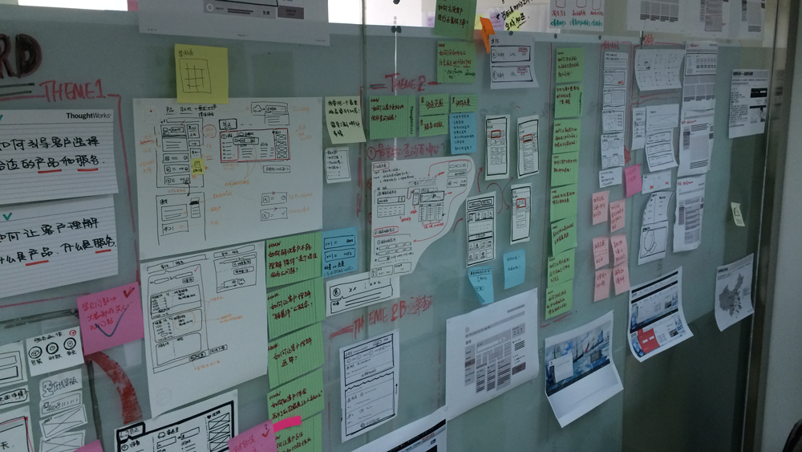
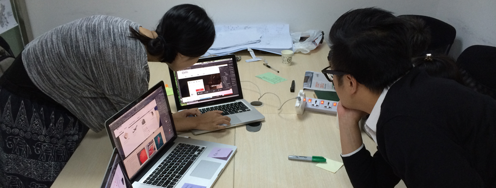

姐问我：马上要去国内传统公司的设计项目了，我该如何跟他们搞好关系呢？我想了想，把我的经验写下来供姐参考。本文准备行云流水不做逻辑精巧了。
尊重客户
打交道的基础是“相互尊重”。设计师总是天生骄傲的，听很多国内的客户说：跟XX设计公司合作，总感觉他们瞧不起我们。有以下方式可以让你的客户体会到你对他的尊重：
- 尽可能晚的提跟设计相关的事情，他不问，你不答，多聊与他相关，例如业务、市场、竞争对手相关的话题；
- 对你的客户好奇，他负责的业务是怎样的？他之前是做什么的？有几个孩子？（虽然这是隐私，但如果能谈到家庭，你和客户的关系已经进入一个新的阶段）；
- 永远思考如何帮助他，去体会客户每句话的意思，体会他的难处，真心的帮助他，介绍朋友给他认识、帮他推荐书、带他去社区活动；
- 把你的心事说出来以及自嘲，平等的关系还在于把自己弱势的一面表现出来，比如我会和客户聊这么多年的出差生活，自己孤独寂寞冷的一面；
- 无论对哪个级别的客户，都要表现出耐心和友好，相信在生意场上，正能量永远是不会错的，比如在客户的电梯里，无论遇到什么级别的客户，我都会非常热情地和他们打招呼，真有一次被一个高级别的领导记住，再后来的演示中被她提起。因此对小事的专注是会给你带来意想不到的结果的。
抓住高层领导者的心
设计对大部分人来说，依然是感官的东西，你将要受到的挑战超乎你想象，因此抓住高层领导者的心极为关键，关键中的关键，是让其他客户看到“你和高层领导者的交互方式”，如果你与高层领导者建立了平等的关系，这将会对你以后的工作大有裨益，一个好的交互方式体现在：
- 你来我往的对话模式，而不是他说你听，你也很难做到你说他听，更多是讨论，如果你能做到你跟高层领导者讨论，其他人在听，接下来的工作易如反掌；
- 能开玩笑，当然这样取决于领导者的性格，和领导者开几个玩笑，活跃一下大家紧张的气氛，顿时你就能让其他级别客户记住你，有次在和某总裁汇报时，总裁调侃了我还没结婚的问题，后来遇到其他层级的领导，他们说：你就是那个还没结婚的小伙子；
- 用他喜欢的方式回答，不同的领导者不同，有的从草根创业、有的是职业经理人、有的是国外背景、有的是国企领导，每个人喜欢的回答方式不同，例如草根创业的领导喜欢真实而有场景感的故事、职业经理人喜欢条理和逻辑、而国企领导喜欢...对不起，仔细想想好像从来没跟国企高层领导打过交道，只能帮你到这里了。
找到自己的特色
一定要建立自己的特色，哪怕是“就是那个笑声很奇怪的小伙子”也不是不可以，除了你的名字之外，你应该有不同于客户这个组织的某种特点，却又有着包容这个企业的兼容性，正经一些的特色可以是：
- 神奇地让一群客户停止争吵的能力；
- 快速将客户的需求可视化的能力；
- 保护交付团队死死控制范围的能力；
- 绝不加班到点下班的能力。
这些特色使得客户即爱你又怕你，爱你能够快速地理解他们的需求，怕你因为你总在控制整个项目的进度，而绝不盲目答应客户胸口碎大石。
把客户现场变成自己的主场
在人家的地盘自然要在气势上低人一等，因此大胆把你们的设计场地改装成设计师喜欢的样子。
在之前的一个设计项目中，虽然我们被安排在一个没有窗户的房间做设计，我们还是很乐观地搭建起了设计墙。到后来，每次设计讨论都挤在我们的设计工作室里进行，虽然没有那些设计咨询公司舒服的环境，我们的专业却挣得了客户的信任。

我们在小房间里给客户演示设计稿，可没有你们在朋友圈里那些有品位的设计工作室，因为我们相信设计一定要和客户在一起。

左口袋小故事右口袋方法论
客户不是像你一样的专业设计师，不理解你口中的那些设计理论，不要对客户说，我们的设计风格是扁平化、我们将要采用响应式的设计，而是用iOS系统的变化解释什么是扁平化、拖动某个响应式设计网站的浏览器展示设计的变化来解释什么是响应式。
因此在你的左边口袋，应该是一些跟设计相关的小故事，例如为什么手机页面的左上角一般不出现Logo呢，因为传统Web页面的左上角Logo是源自于传统报纸把报纸名放在左上角的板式设计，而移动端已经不再追随这个传统，而不是说，移动端设计规范这么规定。
而你右边口袋的，是你的方法论，最简单的方法论是当客户问可不可以做一个这样的需求的时候，你要说：好的，不过先让我多了解一下上下文，你为什么要这样一个需求呢？而不是打开电脑说：来吧！而我经常携带便签纸，到哪里收集的设计需求，我都用便签纸随时进行优先级排序。
增加微关系
我之所以不支持传统的设计咨询服务方式，是设计团队除了项目的开始和结束，无法和客户建立更多的微关系，而这种微关系既是公司与客户间长期关系建立的基础，也是培养设计师与客户打交道能力的最佳方式。
这些微关系可以是和客户坐在一起完成一个交互定义，也可以是一次一起组织的社区活动。在以往的经历里，我经常邀请客户和我们一起参加设计社区的活动，而不是那种销售性质的宣传大会，甚至设计师的面试我都可以邀请到客户一起参与面试环节，这些看起来和主要工作无关的事情，都在进一步地增加我们和客户的关系。
台下谦卑台上碾压
我见到好多人都是反的，在台下沟通时候高高在上，在台上却结结巴巴，而最好的情况是，在台下保持低调的谦卑，把自己放在和客户一样的位置上，而一旦到了台上，就请施展你所有的才华，让客户仰视你，一旦下台，请回到你原来的状态。
这样做的目的是设计领导力，大部分时候客户不满意的也许不是你的设计，而是不满意你，重视你每一次演示的机会，做最充分的准备，放下你所有的谦虚和谨慎，一旦走上台前，就请碾压你的听众。
自信
“用最自信的方式说不那么满的话”，自信是设计师和客户打交道最珍贵的特质，你骨子里的自信给客户带来信心，而包裹自信的并不是张扬，而是内敛、谦虚、和尊重。
写在最后
我们最终都要走向市场、走近客户，无论从什么级别，客户都是你职业生涯最好的伙伴。特别是设计师，因为技能的独特性，我们往往不那么需要直接接触客户，但是市场的变化是，决定设计的，越来越是设计之外的东西，这些东西都存在于与客户的交往之道中，作为设计师的你，准备好了吗？